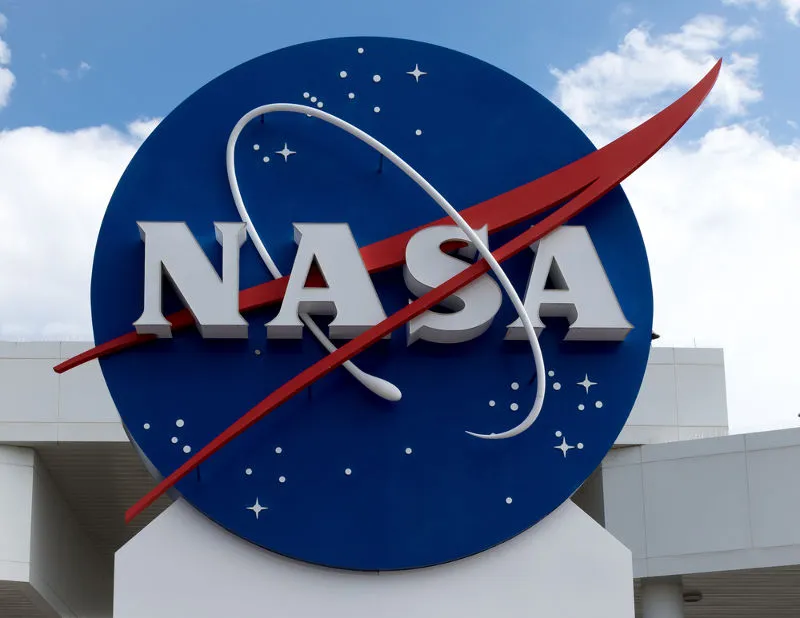

A Ciência da NASA: Explorando os Mistérios do Universo
A NASA, a Administração Nacional da Aeronáutica e Espaço dos Estados Unidos, é a principal agência responsável pela exploração espacial e pela pesquisa em ciência da atmosfera. Desde sua fundação em 1958, a NASA tem desempenhado um papel crucial na compreensão do nosso planeta, do sistema solar e do universo.

1. Exploração Espacial
A NASA tem enviado sondas e robôs para explorar outros planetas e luas, como Marte, Júpiter e Saturno. A missão Mars Rover, por exemplo, tem proporcionado informações valiosas sobre a geologia e a potencial habitabilidade do Planeta Vermelho.
2. Telescópios Espaciais
Com telescópios como o Hubble e, mais recentemente, o Telescópio Espacial James Webb, a NASA tem revolucionado a astronomia. Essas ferramentas permitem observar galáxias distantes, estrelas em formação e exoplanetas, ajudando os cientistas a responder perguntas fundamentais sobre a origem e a evolução do universo.
3. Pesquisa da Terra
Além da exploração espacial, a NASA também se dedica a estudar nosso próprio planeta. Com satélites que monitoram o clima, a qualidade do ar e as mudanças ambientais, a agência fornece dados essenciais para entender e combater as mudanças climáticas. A pesquisa da NASA sobre a Terra é vital para a previsão de desastres naturais e para a gestão de recursos.

4. Inovação Tecnológica
A NASA é um centro de inovação que desenvolve tecnologias que beneficiam não apenas a exploração espacial, mas também a vida cotidiana. Invenções como sensores de temperatura, materiais leves e sistemas de navegação têm aplicações em diversas indústrias, desde a medicina até o transporte.
5. Educação e Inspiração
A NASA também se dedica a educar e inspirar novas gerações. Programas de educação em ciência, tecnologia, engenharia e matemática (STEM) incentivam jovens a se envolverem na ciência e na exploração espacial, preparando-os para carreiras futuras.
Conclusão
A ciência da NASA é uma jornada contínua em busca de conhecimento. Com suas missões ousadas e inovações tecnológicas, a agência não apenas expande nossa compreensão do cosmos, mas também nos ajuda a cuidar do nosso planeta. À medida que continuamos a explorar, novas descobertas esperam para serem feitas, revelando os segredos do universo.
Sobre o Telescópio
Revelando as belezas do cosmos.
Uma janela para o passado: observando as primeiras.